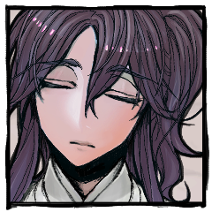

GM
ではシノビガミセッション『神様のヒマ潰し』第七夜、始めていきましょう。
静居 黙雷
おっしゃっしゃっしゃらー！！（よろしくおねがいします）
GM
本日はクライマックスフェイズ再開。ラウンド４のプロットから再開です。
静居 黙雷
2D6>=5 （判定：罠術） (2D6>=5) ＞
10[5,5] ＞ 10 ＞ 成功
静居 黙雷
そうですね、ちょっとやらせて頂きます。
静居 黙雷
傷口から溢れる血を抑える。筋肉である程度の出血は止められるが、お世辞にも余裕があるとは言えない状態だ。
静居 黙雷
それでも、あの少年は笑っている。不安な顔ひとつ見せず、まっすぐに韴子を見ている。
静居 黙雷
自分が何かを行ったことにより、志筑の、そして韴子の望みを断ってしまうかもしれない。
静居 黙雷
それは、本当に恐ろしいことだ。恐ろしいことのはず、なのだが。
静居 黙雷
この場で、自分がいよの命を望まねば、誰が望むというのだろう。

静居 黙雷
小さくため息を吐いて、背筋を伸ばす。
静居 黙雷
「次の占いが出ております。再び、思考の速さ」
静居 黙雷
「……そして、歩みを遅くすることは、あまりおすすめできませぬなぁ……」
静居 黙雷
「先を、未来を求めて進むことこそ、人の生きる道、ではありませんでしょうか」
静居 黙雷
「いえ、いえ。これは黙雷の独り言でありますが」
[ 雨野 いよ ] がダイスシンボルを公開。出目は 5 です。
[ 静寂ヶ原 志筑 ] がダイスシンボルを公開。出目は 4 です。
[ 天之 韴子 ] がダイスシンボルを公開。出目は 4 です。
[ 静居 黙雷 ] がダイスシンボルを公開。出目は 3 です。
[ 静居 黙雷 ] がダイスシンボルを公開。出目は 4 です。
GM
接近戦ともなんともないので任意分野といたします。
GM
了解です。志筑は体術しかないので体術で、これを受けて脱落ですね。
静居 黙雷
鎖が境界を作ってゆく。彼方と此方を区切るもの。神域とそれ以外を分けるもの。
静居 黙雷
一定以上、一定以下の速度で動く者を鎖は捉え、縛り、雷が体を焼くだろう。
静居 黙雷
これで志筑は倒れるかもしれない。これで韴子の夢は潰えるかもしれない。
静居 黙雷
通したい我がある。死なせたくない人がいる。
静居 黙雷
「この程度、乗り越えて貰わねば困る！」
[ 天之 韴子 ] 戦術 : 1 → 0
[ 静寂ヶ原 志筑 ] 体術 : 1 → 0
天之 韴子
耳をつんざく音。視界がちかりと光り、全身に熱と痛みが走る。
静居 黙雷
「神ともなろう方が、境界に足を取られてしまうとは」
静寂ヶ原 志筑
引かれた境界に打たれたのは、志筑も同じ。
静寂ヶ原 志筑
声もなく、刀を持つ手が震える。刃先が地を噛む。
静寂ヶ原 志筑
声にはならず。ただ苦悶の息が落ちるさま。
静寂ヶ原 志筑
ぐ、と歯を噛み締めた。もはや上がらぬはずの顔を上げる。
静寂ヶ原 志筑
そうして、忍の間に結ばれた感情が。
二人の間に、すべてを伝える。何もかもを伝える。
静寂ヶ原 志筑
遠い日から今に至るまでの、きらきらとした憧れ。
届かない悔しさ。隣にいることの安らぎ。小さな幸福。時折の苛立ち。
しかし、そのすべてが、眩しくて嬉しくて楽しい。
静寂ヶ原 志筑
あなたを見ていた。
あなたの背を、あなたの笑顔を、あなたの、そうでない顔も。
静寂ヶ原 志筑
お前のことが、何よりも誰よりも大切で。
だから、お前の望みならなんだって叶えてやりたかった。
静寂ヶ原 志筑
伝えるくらいは、いいってことにしてくれないか。
静寂ヶ原 志筑
天之韴子への遺言
【静寂ヶ原志筑の秘密】
あなたは超然たるPC2に負かされ続ける一方で、誰よりも近くで触れ合い、PC2が当たり前に笑う姿を見てきた。
あなたはPC2が神などではなく自分たちと同じ人間であることを信じている。
それを証明するためには、PC2に敗北というものを教えてやらなければならないと思っている。
あなたの本当の使命は【PC2が人間であることを証明する】である。
静寂ヶ原 志筑
「……おれ、どうしてもそうしてほしいなら、言葉にしなきゃだめだって、そう言ったろ」
静寂ヶ原 志筑
「おれは、どうしてもそうしてほしかったんだけど」
静寂ヶ原 志筑
「おれと一緒に、死んでほしかったよ」
GM
遺言を伝えるために、志筑は死亡を選択しました。
天之 韴子
志筑に幸せに生きて欲しいという気持ちも、共に死んで欲しいという気持ちも。
天之 韴子
志筑が自分を忘れて幸せになってしまうことも、彼の命が自分のために失われてしまうことも。
天之 韴子
けれど自分の理性が叫ぶのだ。伝えるべきではないと叫び続けるのだ。
天之 韴子
どうしてこんなに後悔の気持ちが押し寄せてくるのだろう。
天之 韴子
本心の言葉を待ち望んでくれていた。それを自分は拒み続けた。
天之 韴子
せめて戦いの中で。そう願った最後の手合わせは、機会すら訪れず。
天之 韴子
メッセージを受け取って、本心を知って。
天之 韴子
彼も望んでくれていたのだと、受け入れてくれたのだと自分が知る頃には、もう返す言葉は届かない。
天之 韴子
わかっていた。わかっていたことだ。わかっていたことだったはずだ。
天之 韴子
世界の命運と個人的な決着。どちらが重いかなど比べるまでもない。
静居 黙雷
志筑の亡骸を見下ろす。
最後まで諦めなかった、若き主の姿を。
静居 黙雷
「最後だから、手を抜いた方がよかったと？」
静居 黙雷
「私は若が韴子様に勝つまで、指を咥えて眺めていればよかったと？」
静居 黙雷
「志筑様を死なせたくないというのは、韴子様も、私も同じでしょう」
雨野 いよ
強い言葉とは対照的に表情にも声にも荒々しい感情はない。
雨野 いよ
哀れみとも、悲しみとも、怒りともつかない表情で二人を見下ろしている。
雨野 いよ
「人の心がない振る舞いをしているのは、誰でもないお前だよ。まるで試練を与える神気取りだ」
雨野 いよ
黙雷の言っていることは間違いではない。
立場と、感情と、黙雷自身の無力さと。
もし同じ立場だったら、今の私のように二人の決着を見届けようなどという感情になるはずがない。
雨野 いよ
私のこの考えもシノビガミであるからだという傲慢さからは逃れられない。
雨野 いよ
「……仕える主を討ち、その想い人にかける言葉とは思えないよ」
雨野 いよ
「ただもう甘やかすことはないというだけだ」
静居 黙雷
「黙らせたいのなら、力尽くでやってみたらどうだ」
GM
◆ラウンド４
プロット５：いよ ４：韴子 ３：黙雷
雨野 いよ
張り巡らせたワイヤーの上から、眼下の三人を見る。
倒れた志筑、泣く韴子、そしてこちらを見据える黙雷。
雨野 いよ
「……後悔しないんじゃ、なかったの？」
雨野 いよ
その言葉を伝えるべき相手は、もうここにはいない。
雨野 いよ
「もう一度聞くよ。ふーこはどうしたい？」
天之 韴子
志筑が倒れてしまえば、もう神になることに躊躇う理由もないと思っていた。
雨野 いよ
「心残りがあると、決意って鈍るんだよ」
雨野 いよ
「………そうだよ。大人になるってことは、そういうこと」
雨野 いよ
「1つは、もしふーこが勝ってシノビガミになるのなら、私の両眼をもっていく必要があること」
雨野 いよ
「2つめは、私が勝てば……私が死ねば、志筑様と話すことも、後悔を癒すことも、………志筑様がふーこに挑むことも、できる」
雨野 いよ
どれほどの猶予があるかは、いよにもわからない。
天之 韴子
「世界で一人だけ、助けられる人がいるとしたら」
天之 韴子
一番好きな人のことは、大切にできなかった。
天之 韴子
一番好きな人の幸せだけを願えたなら、こんなに悩むことはなかった。
天之 韴子
「負けたかったよ。死にたかったよ。せめてそれを伝えたかった！」
天之 韴子
「でも、それを伝えるために、いよちゃんが死ななきゃいけないんなら」
天之 韴子
「私がいよちゃんと一緒にもっくんと戦う事はないよ」
天之 韴子
「きっと後悔するし、やだし、すごく心が痛いけど」
天之 韴子
「私はいよちゃんの目を貰うし、志筑には私のことなんて忘れてもらうんだ」
雨野 いよ
「ふーこにも黙雷にも、渡してやらないから」
雨野 いよ
2D6>=5 （判定：死霊術） (2D6>=5) ＞
10[4,6] ＞ 10 ＞ 成功
GM
やっぱり10以上しか出せないのか？ 二人は死霊術より回避判定をお願いします。
GM
命中したら揺らしが乗って射撃戦ダメージ２点です。
天之 韴子
2D6>=8 （判定：罠術） (2D6>=8) ＞ 8[4,4]
＞ 8 ＞ 成功
[ 静居 黙雷 ] 忍具 : 2 → 1
[ 静居 黙雷 ] 妖術 : 0 → 1
静居 黙雷
2D6>=6 （判定：結界術） (2D6>=6) ＞
10[4,6] ＞ 10 ＞ 成功
GM
では二人共回避成功です。演出などお願いします
雨野 いよ
黙雷の呼んだ雷に目をやると、小さく息をつく。
雨野 いよ
「……なんでこう、そんなところまでそっくりかなぁ」
雨野 いよ
神の宿る両目が見るのは現世だけではない。
雨野 いよ
常人が感知しえないものまでも見晴らす両眼。
雨野 いよ
黙雷が呼び寄せたはずの雷はいよの手によりあちらこちらへ稲光をまき散らす。
雨野 いよ
縦横無尽、四方八方から雷が襲い掛かる。
天之 韴子
音の歩みよりも素早い一閃。扇で払う。糸が切れて光は逸れる。
天之 韴子
汗が飛ぶ。辛うじて間に合った。次、同じことをされても避けられるかはわからない。
静居 黙雷
神に雲を奪われる。
恵みの雨を、稲光を。
静居 黙雷
「……雨と雷だ、似るのは仕方あるまいよ」
静居 黙雷
鎖が奔る。刹那、ワイヤーを絡め取り、そのまま樹木に縛り付ける。雷を逃がす。
天之 韴子
2D6>=5 （判定：縄術） (2D6>=5) ＞
11[5,6] ＞ 11 ＞ 成功
雨野 いよ
2D6>=10 （判定：針術） (2D6>=10) ＞
5[2,3] ＞ 5 ＞ 失敗
[ 雨野 いよ ] 忍具 : 2 → 1
雨野 いよ
2D6>=10 （判定：針術） (2D6>=10) ＞
7[2,5] ＞ 7 ＞ 失敗
[ 雨野 いよ ] 頑健 : 2 → 0
天之 韴子
2D6>=5 （判定：骨法術） (2D6>=5) ＞ 5[1,4]
＞ 5 ＞ 成功
天之 韴子
2D6>=5 （判定：縄術） (2D6>=5) ＞
3[1,2] ＞ 3 ＞ 失敗
[ 天之 韴子 ] 忍具 : 2 → 1
天之 韴子
2D6>=5 （判定：縄術） (2D6>=5) ＞ 5[1,4]
＞ 5 ＞ 成功
雨野 いよ
2D6>=10 （判定：針術） (2D6>=10) ＞
11[5,6] ＞ 11 ＞ 成功
天之 韴子
風が吹き荒れる。雨粒が針のように四方八方より降り注ぐ。
雨野 いよ
嬉しい。涙を浮かべながら自分の前に立つ韴子の成長が。
雨野 いよ
哀しい。どんどんと人間離れした力を振るう韴子を見るのが。
天之 韴子
いよの通り過ぎた足元に、蟻の巣のような穴がいくつも穿たれる。
雨野 いよ
走る。駆ける。跳ぶ。
機関銃の掃射よりも鋭く静かな雨風がワイヤーでできた鳥籠を引き裂いていく。
雨野 いよ
これだけの力をいつまでも振るってはいられまい。
静居 黙雷
2D6>=5 （判定：縄術） (2D6>=5) ＞ 5[1,4]
＞ 5 ＞ 成功
雨野 いよ
2D6>=8 （判定：針術） (2D6>=8) ＞
3[1,2] ＞ 3 ＞ 失敗
GM
揺らしが乗って射撃戦ダメージ2点です。
以降いよさんの回避判定に-1の修正が。
[ 雨野 いよ ] 忍術 : 1 → 0
[ 雨野 いよ ] 戦術 : 1 → 0
静居 黙雷
神がもたらす大地を穿つ雨粒。その中を神が駆けている。
静居 黙雷
どうして人間の自分はここにいるのだろう。どうして志筑はそこで血を流し、倒れているのだろう。
静居 黙雷
頭がくらくらする。感情が堰を切って溢れそうになる。
静居 黙雷
しかし、まだその時ではない。泣くことも喚くことも、後でできる。今やるべきは、今成すべきは。
静居 黙雷
最小限の回避行動は、動きを読みやすくさせる。韴子の攻撃を躱せば当たり、こちらの攻撃を躱せば韴子の攻撃に当たるように。
静居 黙雷
そのくらいの知恵は、この十数年で付けてきた。
静居 黙雷
鎖が渦巻き、波打ち、陣を作る。いよを、神を捉えようとする。
雨野 いよ
風よりも音よりもはやく、もはや雷のようにワイヤーの上を駆け巡る。
雨野 いよ
鎖の音。
黙雷が陣を張るのだ。
周囲は韴子の力が未だに渦巻いている。鎖と併せるように。
静居 黙雷
鎖は大蛇を形作り、いよを丸呑みにする。
静居 黙雷
金属が肉を、骨を破壊しようと、いよの体を締め上げる。
雨野 いよ
鎖の蛇に呑み込まれ、視界も音も鎖の渦中。
静居 黙雷
黙雷の感情のように、騒がしく、重苦しい音。
雨野 いよ
そのすべてに付き合ってはいられない。
大人ならば、自分で見つけなければならない。
雨野 いよ
狙いを遮られた韴子の力が鎖に襲い掛かる。
雨野 いよ
そのわずかな隙間に強引に左腕を突き上げると、あっさりと蛇の横腹が割れる。
雨野 いよ
血に染まった左腕を省みることなく、黙雷を一瞥すると再び走り出す。
静居 黙雷
「お前を丸呑みにしてやれば、俺のものになるかと思ったのだがな……」
静居 黙雷
2D6>=5 （判定：罠術） (2D6>=5) ＞
11[5,6] ＞ 11 ＞ 成功
GM
マジマジのマジだしめちゃくちゃ高い。なんやねん。
静居 黙雷
それは散り散りに分かれて、鎖の一本一本へ分かれてゆく。
静居 黙雷
「次はそうですね、また思考の速度でありましょうか」
[ 天之 韴子 ] がダイスシンボルを公開。出目は 4 です。
[ 雨野 いよ ] がダイスシンボルを公開。出目は 4 です。
[ 静居 黙雷 ] がダイスシンボルを公開。出目は 4 です。
[ 静居 黙雷 ] がダイスシンボルを公開。出目は 3 です。
天之 韴子
2d (2D6) ＞
7[2,5] ＞ 7
静居 黙雷
2D6 (2D6) ＞
6[2,4] ＞ 6
雨野 いよ
2d6 (2D6) ＞
11[5,6] ＞ 11
静居 黙雷
2D6>=5 （判定：縄術） (2D6>=5) ＞ 7[1,6]
＞ 7 ＞ 成功
静居 黙雷
2D6>=5 （判定：縄術） (2D6>=5) ＞
2[1,1] ＞ 2 ＞ ファンブル
[ 静居 黙雷 ] 忍具 : 1 → 0
静居 黙雷
2D6>=5 （判定：縄術） (2D6>=5) ＞
11[5,6] ＞ 11 ＞ 成功
GM
いよさんは回避判定を。一度鎖陣を受けているため、-1がつきます。
雨野 いよ
2D6>=9 （判定：針術） (2D6>=9) ＞
8[2,6] ＞ 8 ＞ 失敗
GM
射撃戦ダメージが３点です。潰す分野の指定を。＞いよさん
GM
OK。プロット４の処理が終了したら減らします。
静居 黙雷
全員が斎垣の向こう、神域へと踏み入る。
静居 黙雷
「なぁ、いよ。お前は俺を神気取りだと言ったが……」
静居 黙雷
「俺はどうしようもなく人間だ。我欲のために嘘を吐くし、神の威を借りもする」
静居 黙雷
「お前や韴子様や……志筑様のような方と並ぶべきではない、汚い、弱い人間だ」
雨野 いよ
神だ神だと言われていても、それは正しい器に収まった時のこと。
雨野 いよ
とうに肺は悲鳴を上げ、脚は軋み、腕の感覚などとっくにない。
雨野 いよ
ただ、韴子と黙雷と志筑様のため。
最後まであきらめきれない私の世界のため。
雨野 いよ
押し寄せる鎖と、それを操る黙雷。
そしてその向こうの、韴子を見つめる。
天之 韴子
そうだね、私はまだ神様じゃない。神様に必要な、眼がないから。
天之 韴子
でもね、志筑。神様になるために必要な、もう一つ大切なもの……
天之 韴子
……この血は、最初から私の中に流れてるんだよ。
天之 韴子
「奥義──『斎子亡（ゆつつなくし）』」
天之 韴子
＊奥義 不死身／目覚め／回数制限 指定特技：九ノ一の術
天之 韴子
1d6-1 (1D6-1)
＞ 5[5]-1 ＞ 4
GM
……全回復ですね。
目覚めの効果の乗った不死身で生命点を回復したため、以降韴子の攻撃に1点の接近戦ダメージが乗ります。
[ 天之 韴子 ] 忍術 : 0 → 1
[ 天之 韴子 ] 戦術 : 0 → 1
天之 韴子
2D6>=5 （判定：罠術） (2D6>=5) ＞ 7[3,4]
＞ 7 ＞ 成功
天之 韴子
2D6>=5 （判定：罠術） (2D6>=5) ＞ 7[1,6]
＞ 7 ＞ 成功
天之 韴子
服を濡らした血が、光の粒となって零れる。
天之 韴子
傷口を塞ぎ、血の汚れや衣までも元通りに。
天之 韴子
この血が流れる限り、韴子が死ぬことはない。
天之 韴子
死のうと思っても、死にたいと願っても。
天之 韴子
降り続ける。人の時間としては刹那、忍者の世界では永遠とも言えるほどの時を。
天之 韴子
それは弱るどころか、より一層勢いを増し、地面を打ち付ける。
天之 韴子
土は泥のようにぬかるみ、足を絡め取る。
天之 韴子
風は刃となり、扇を振れば横へ、持ち上げれば追従するように上へ。
天之 韴子
針のような水の弾丸がその流れに従って降り注ぐ。
雨野 いよ
鎖と黙雷の向こうに、覚悟を決めた韴子の姿。
雨野 いよ
選抜を受ける前、まだ幼い韴子は将来世話役になる者達によく懐いていた。
雨野 いよ
選抜を終え、私が世話役となった時も笑顔で喜んでくれた。
雨野 いよ
学校を終え迎えに行けば、嬉しそうに学校での出来事を教えてくれた。
雨野 いよ
＊回想シーン 秘密公開して達成値に+3
雨野 いよ
【秘密：雨野 いよ】
あなたは現代のシノビガミである。
あなたは、成人の儀が天之 韴子が完全無欠のシノビガミへと為るための儀式であることを知っている。
しかし、まだまだ若い天之
韴子にこのような重荷を背負わせてしまうことを申し訳なく思っている。
あなたはプライズ『天帝の眼』を所持している。
雨野 いよ
そして私は、シノビガミになった。
最初からそうなることを運命づけられた韴子につなぐだけの、ただの依り代。
雨野 いよ
そのことは明かせなかった。
それでも韴子は、毎日笑顔を見せてくれた。
雨野 いよ
私がシノビガミであることを知っても。
それでも、私が一番大事だと、笑ってくれた。
雨野 いよ
その韴子が涙を浮かべながらも、私のことを倒すべき相手として向かってきている。
GM
鎌鼬、忍法修行、鎖陣の-3と、回想シーン+3を乗せた回避判定をどうぞ。
雨野 いよ
2D6>=8 （判定：針術） (2D6>=8) ＞
7[2,5] ＞ 7 ＞ 失敗
GM
が、同時行動で処理していない生命力の欠けと合わせて
雨野 いよ
＊宣言を先に クリティカルヒット 対象は天之 韴子
天之 韴子
2D6>=6 （判定：骨法術） (2D6>=6) ＞ 7[2,5]
＞ 7 ＞ 成功
雨野 いよ
それでもまだ、たとえ針の穴ほどの勝機でも、あきらめられない。
雨野 いよ
眼前に襲い掛かる鎖の波。
―――躱さず、突っ切る。
雨野 いよ
簡単なものではない。
全身を打ち付ける痛みは迷いなく襲い掛かる黙雷の意思が通っている。
静居 黙雷
鎖の波は、容赦なくいよの体を傷付ける。
静居 黙雷
志筑を死なせてなるものか。いよを死なせてなるものか。
雨野 いよ
肩を、肋を、足首を。砕きながら前へと進む。
雨野 いよ
ごめんねもっくん。
最後だけは、私の我儘を通すよ。
雨野 いよ
鎖の波を突き抜け、黙雷には目もくれず韴子の元へ。
雨野 いよ
まだ動ける。まだできる。これがたとえ捨て身でも―――
天之 韴子
いよちゃんが、こんな直線的な動きをするはずがない。
天之 韴子
わからないことがあれば彼女へと尋ねる。
天之 韴子
自分だけしか知らない、誰にも言えない彼女の素顔を、山ほど知ってるのが誇らしかった。
天之 韴子
今はお互い、奥底の脆いところは隠し合ってきちゃったけど。
天之 韴子
──本当は、いよちゃんだって辛いでしょ。
天之 韴子
まっすぐ育った。いよちゃんのお陰だよ。
天之 韴子
今度は私が守るから。生きて、幸せになって。
雨野 いよ
「………やっぱり、ねぇ、斬れないや……」
雨野 いよ
「……こん、な、かわいい、ふーこを、さ………」
雨野 いよ
血に濡れた、力ない右手が韴子の頬を撫でる。
雨野 いよ
その顔を、温度を、すべてを、決して忘れるものかと。
天之 韴子
「世界だって……救ってみせるんだから……！」
[ 雨野 いよ ] 器術 : 1 → 0
[ 雨野 いよ ] 体術 : 1 → 0
[ 雨野 いよ ] 謀術 : 1 → 0
[ 雨野 いよ ] 妖術 : 1 → 0
天之 韴子
＊天帝の眼を雨野いよから奪い、全員生存を選択します
GM
17日、木曜日の夜９時から、クライマックスフェイズのRPの〆と、
静居 黙雷
勝つつもりで来たのに、なんでぇってなってる